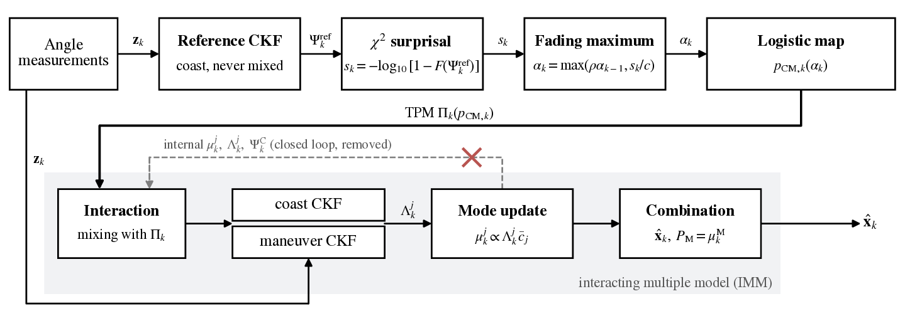

Monte Carlo runs
A geostationary target is tracked by four space-based optical sensors (azimuth and elevation every 60 s). The truth includes J2–J6, lunisolar third-body and solar radiation pressure accelerations, whereas all filters propagate J2 only. A single impulse is applied at tb = 120 min, and the first 30 min are excluded as warm-up.
run 6
Table 1. Detection and tracking results (50 Monte Carlo runs per case)
Detection probability Pd / median latency [min]. The highlighted column is the case selected above.
* Declared before tb in more than half of the runs. –: no declaration (EKF) or not evaluated (internal-NIS drive). Post-burn RMSE is over the first 60 min after an in-track 1 m/s impulse.
Figure 1. Structure of the reference-driven IMM (RD-IMM)
